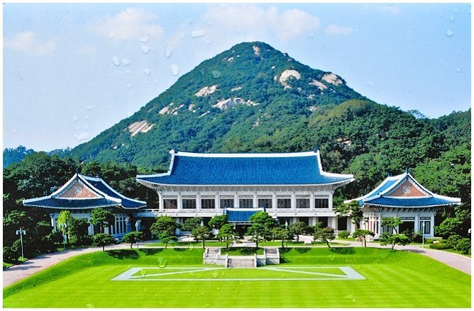
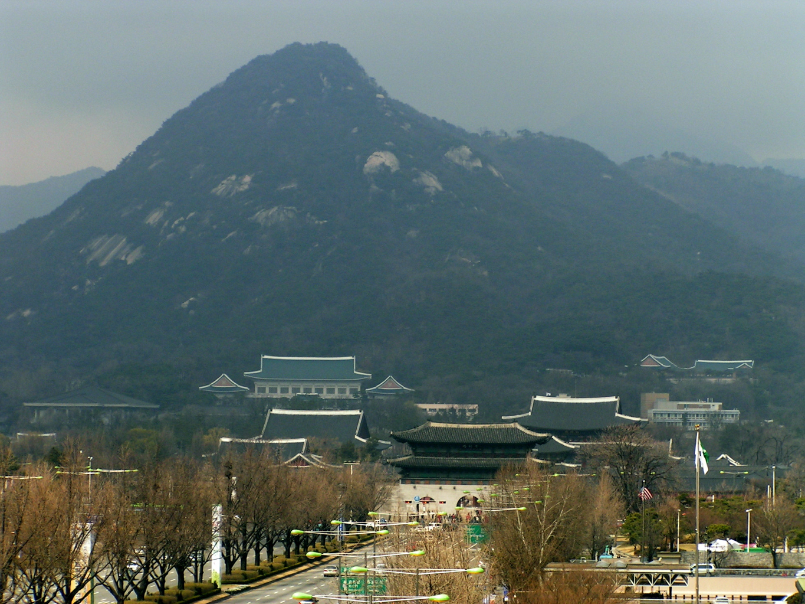

景點一
青瓦臺

青瓦臺(韓語：청와대)是大韓民國的總統府，位於首爾鐘路區靑瓦臺路一號。
簡介
歷史上，靑瓦臺的名稱幾度更改。1426年朝鮮王朝建都漢城後，它被稱作景福宮後園，修建了隆武堂、慶農齋和練武場等建築，並開闢了一塊國王的親耕地；也曾做為科舉考場。1927年，日本人在景福宮內新建了廳舍，並把朝鮮總督官邸設在此地。1945年變為美軍政廳軍政長官官邸。1948年大韓民國成立後改為總統李承晚辦公與官邸所在地，最初稱為「景武臺（韓語：경무대）」，到了尹潽善時期便更名為「靑瓦臺」。現在的青瓦臺是盧泰愚總統在任時新建的。
由於1968年曾發生派朝鮮人民軍發動的青瓦臺事件，所以現時韓國的街道圖未必會標明靑瓦臺的所在地。不過，在靑瓦臺的官方網頁卻有準確的地址。為了防範朝鮮間諜，進入靑瓦臺一帶時會有簡單的安檢。
內含的建築物
- 本館：1991年完成，為青瓦臺的主建築，韓國總統辦公室、接見室、會議室（名為「世宗室」）及餐廳的所在地，是整個青瓦臺的中樞，佔地約8,500平方公尺。
- 迎賓館：1978年完成，（在此之前，朴正熙總統多半於現由新羅酒店管轄的「迎賓館」內招待國內外政要）是韓國總統招待國賓、舉行國宴的地方，也是舉行官方活動及大型會議的場所；位於主樓左側。
- 春秋館：青瓦臺發佈新聞、舉行記者會的地方，位於主樓右側。一樓設有記者辦公室和小會客室，二樓則設有大會客室。
- 總統官邸：總統及其家人的居住地方。
- 秘書室：是青瓦臺工作人員的辦公室，由三個建築物構成。
- 常春齋：是純韓式建築，也是舉行首腦會談的地方。
- 綠地苑：庭園
- 七宮
- 木槿花花園

青瓦臺遠景(景福宮後方)